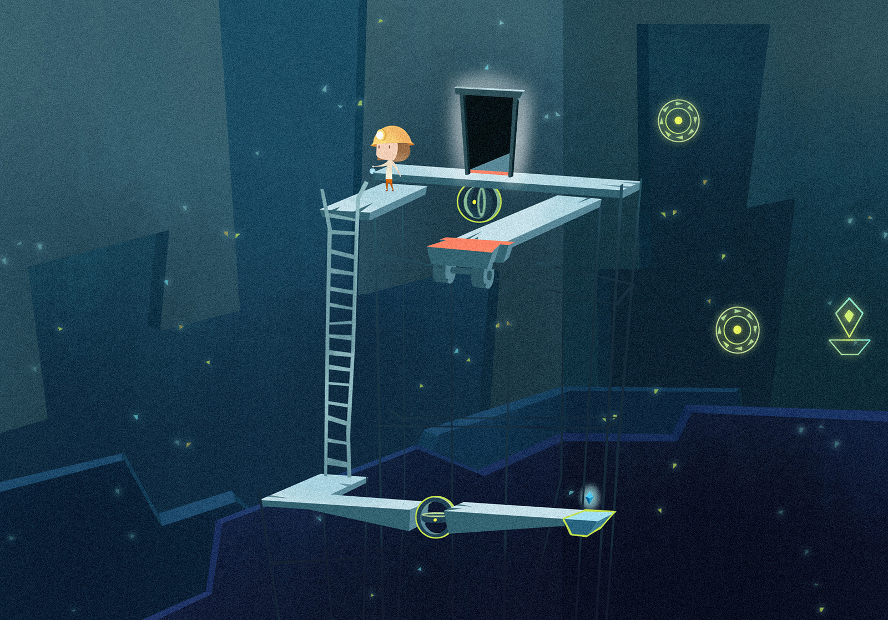

---------------Summary---------------
Relumine is a puzzle game in which the player leads the girl Relu through the ancient mine to find her father.
---------------Gameplay---------------
The game uses both 2D space and 3D space.
Player-character Relu can only walk in 2D perspective while the environment is 3D.
The environment is surrounded by 4 walls. Magical glows appear on the walls and can only be used in 2D perspective. The player can manipulate the glow to affect the objects in the 3D environment.
---------------Story---------------
After the mine collapsed, Relu decides to go into the mine to find her father. She enters the mine and finds that it is another land. The wall’s crystals reflect the past and tell her the direction. She sees the ancient paintings about a prince called Paragon as she goes deeper in the mine.
Relu finds out that people’s souls are captured by Paragon, including her father. Paragon keeps the souls as his collection. With the help of mollusks, she enters Paragon’s palace. She deals with Paragon while releasing the souls. Eventually she lets go all souls and saves Paragon, who is a little boy abandoned by Carbon God. After Paragon returns back to sky, he lets Relu reunite with her father.
---------------Concept Art---------------
